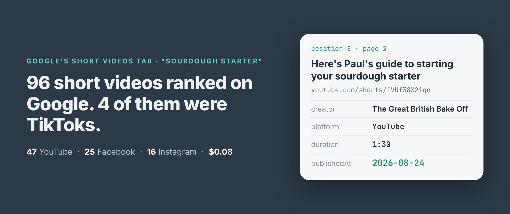
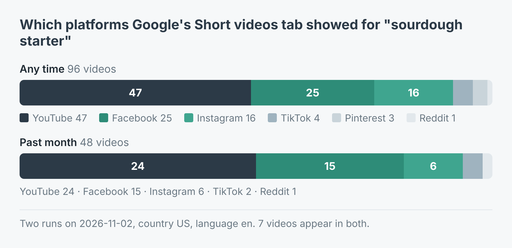
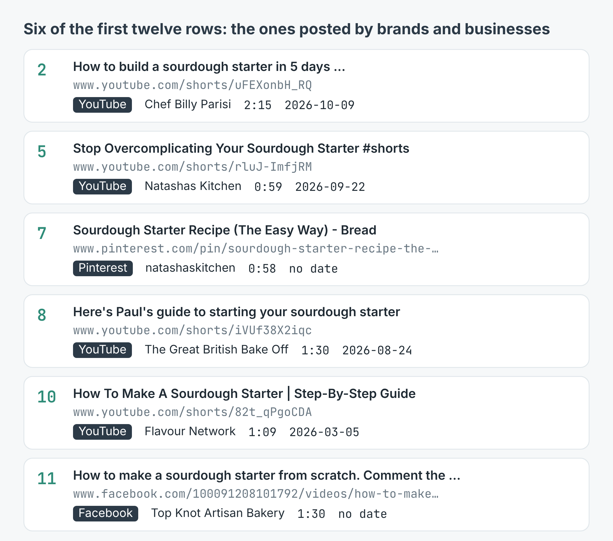
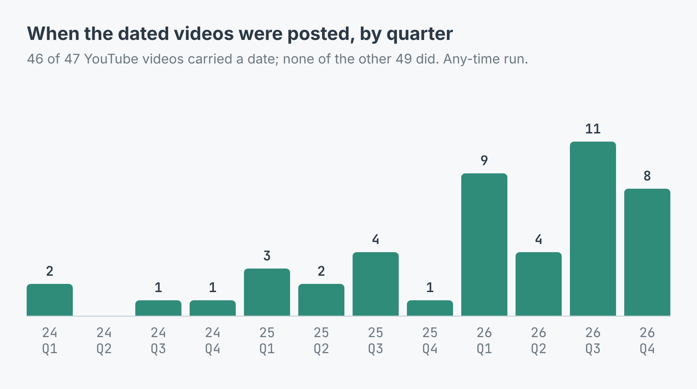

How to see which short videos rank on Google for a keyword (96 for "sourdough starter", 4 of them TikToks)
I wrote this with an AI assistant. The runs, numbers and code are real, and I checked them.

Ask people where short sourdough videos live and most will say TikTok. Ask Google, and it's a different answer. Its Short videos tab showed me 96 videos for "sourdough starter" this morning. 47 were YouTube Shorts. 25 were Facebook videos, 16 Instagram Reels. TikTok had 4.
That matters if you make short videos and want them found from a search box, or if you're trying to work out who owns a topic. The tab is a ranking, and a ranking can be read.
What I asked for
I build and run a scraper for Google's Short videos tab on Apify. You give it a search, the way you'd type it into Google, and it returns every video the tab lists, in Google's order: the link on its own platform, title, creator, platform, duration, a thumbnail, the description Google carries and, where Google shows one, the date.
I ran "sourdough starter" twice from the US, in English. Once with no time filter and 96 videos, once with timeRange: "month" and 48. Here is the first, counting platforms:
import { ApifyClient } from 'apify-client';
const client = new ApifyClient({ token: process.env.APIFY_TOKEN });
const run = await client.actor('simple.actor/google-short-videos')
.call({ queries: ['sourdough starter'], maxItems: 96 });
const { items } = await client.dataset(run.defaultDatasetId)
.listItems();
const count = {};
for (const v of items) {
if (v.type !== 'video') continue; // error rows carry no video
count[v.platform] = (count[v.platform] ?? 0) + 1;
}
console.log(count);
The type check is there because a search that can't be read comes back as a row with type: "error", not as an empty result. Both runs came back clean: 96 videos and 48, no error rows.

The platform mix for one search, with and without the past-month filter. Only 7 videos were in both lists.YouTube owns it, and Facebook is second
Half of each list was YouTube: 47 of 96 any time, 24 of 48 in the past month. Facebook was a clear second both times, 25 and 15. TikTok was 4 and 2.
The top of the list was more mixed. The first twelve positions held 5 YouTube videos, 2 each from Instagram, Facebook and TikTok, and one Pinterest pin. So TikTok gets into the top twelve and then all but disappears.
Pinterest wasn't something I'd asked for. It showed up three times, at positions 7, 70 and 91, and Reddit once. The scraper's platform filter offers seven platforms. Google's mix with no filter isn't bound to those seven.
The list is spread thin. 72 different creators made the 96 videos and only 17 had more than one. If you're working out who to partner with or who you're up against, that's the useful part: a long list of small channels, with a few brands and a TV programme near the top.

Six of the first twelve rows, the ones posted by brands and businesses. Only the YouTube rows have a date.The past month is a different list
I expected the month filter to trim the old videos off the same list. It didn't. Only 7 of its 48 videos were among the 96 from the unfiltered run. Every dated video in it was posted between 2 October and 1 November.
The unfiltered list is where the old stuff lives. Of its 46 dated videos, 14 were posted before 2026 and the oldest went up in March 2024. 8 were from October or the first day of November. So if the question is "what is Google showing people for my keyword right now", run both: the unfiltered list is what most searchers see, and the month list is what's new and climbing.

Publish dates of the 46 dated videos. The rest had none."Short" also stretches. The median video in the unfiltered run was 80.5 seconds. 67 of the 96 ran past a minute, 27 past two minutes, and the longest was exactly three minutes. In the month list the median was 60 seconds.
What it cost
The listing charges $0.0008 for each video returned, $0.006 for each search Google answers, and a $0.00005 start fee. The 96-video run was 96 × $0.0008 + $0.006 + $0.00005 = $0.08285. The month run was $0.04445. Both together came to under 13 cents. A search that can't be read is never charged.
It wasn't quick. Google's tab shows about twelve videos a page and repeats some from one page to the next, and the scraper keeps each video once, so 96 different videos took 14 pages and 6 minutes 21 seconds. The 48-video run took 3 minutes 16 seconds.
What the rows won't tell you
There are no view counts. Google's tab doesn't show them, so the rows can't carry them. If you want to know whether a video is popular rather than just ranked, you need another source.
Dates are YouTube's alone. 46 of the 47 YouTube videos had one; none of the 49 from other platforms did. For anything not on YouTube, the month filter is your only handle on age.
Creator names aren't joined across platforms. Natasha's Kitchen is "Natashas Kitchen" on YouTube and "natashaskitchen" on Pinterest. Count creators per platform, or normalise the names yourself, before you call anyone the top creator.
And a run can work harder than its result shows. When I tried the example script on "cold brew coffee", the scraper logged that 6 of 9 video links on Google's first page couldn't be followed to the video. It read a second page and still returned the 12 I asked for, but those six were never seen, and the tab is a ranking, so a missing video is a missing position.
Make it your keyword
The example repo, google-short-videos-scraper, takes a search, a count and a time range, prints the platform mix and the top five, and writes every video to videos.csv, in Node and in Python. Put in your product ("standing desk review"), your town ("things to do in Leeds"), or your trade ("bathroom tiling tips"), add month to see what's new, and give the scraper platform: "tiktok" or "instagram" in its input if you only care about one. The scraper is at apify.com/simple.actor/google-short-videos.